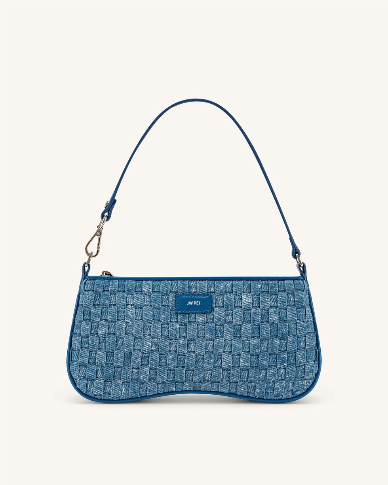
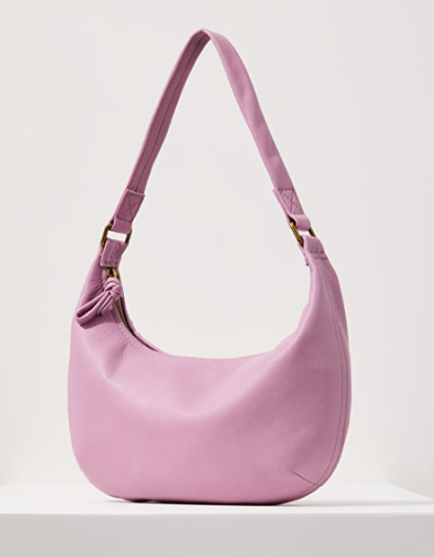
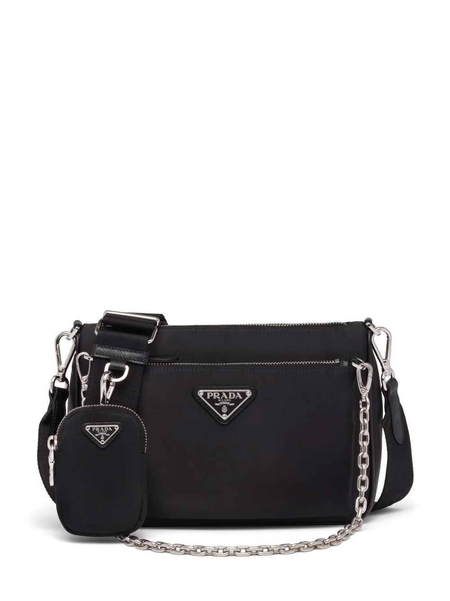
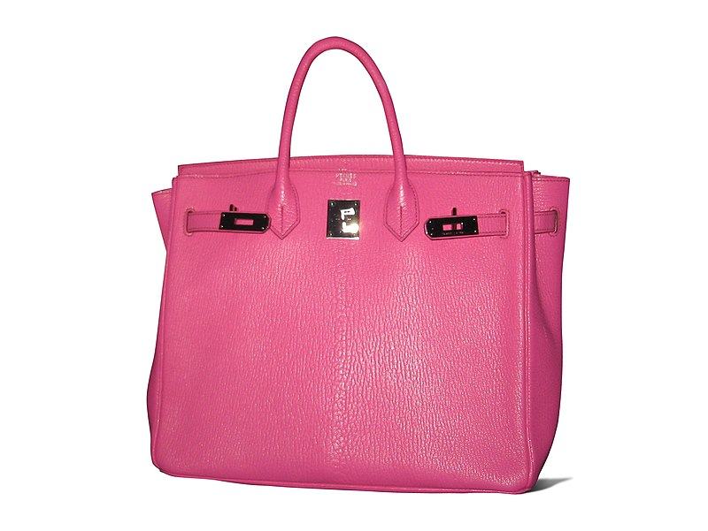
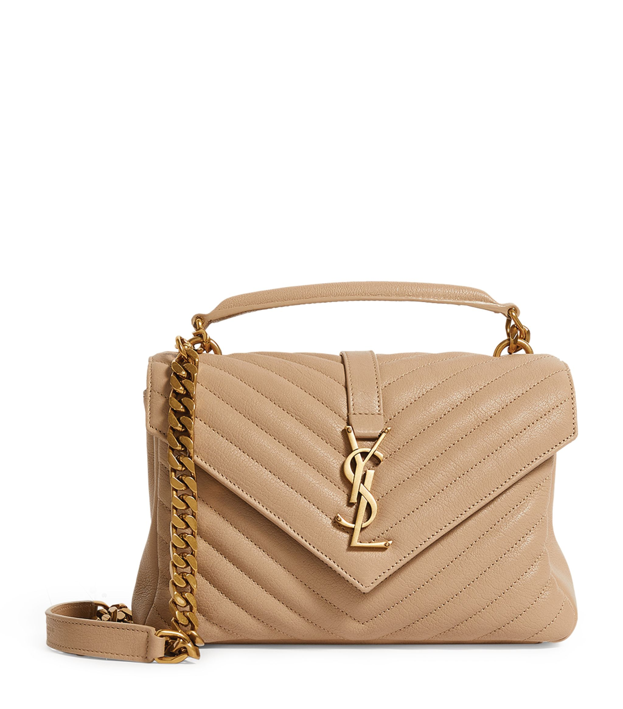
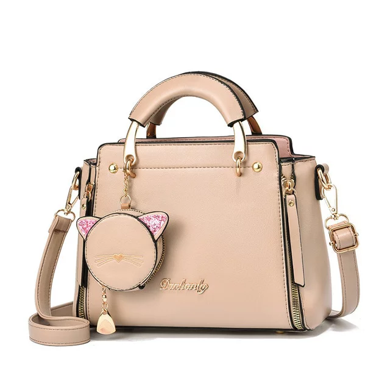
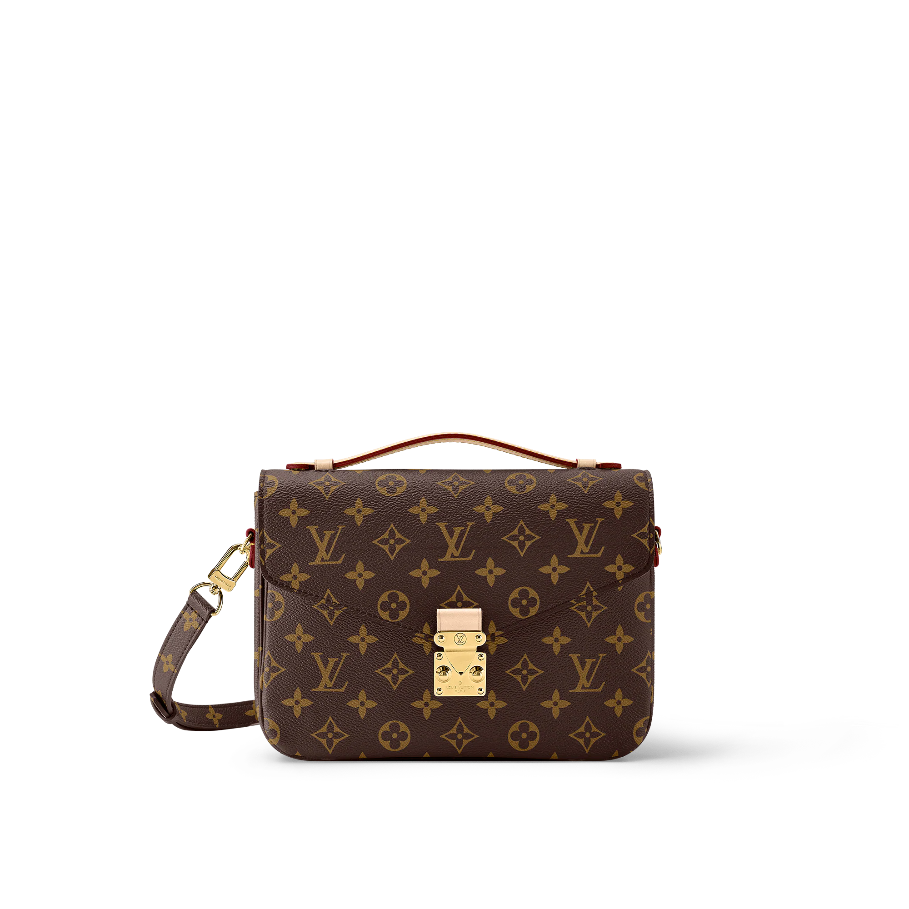
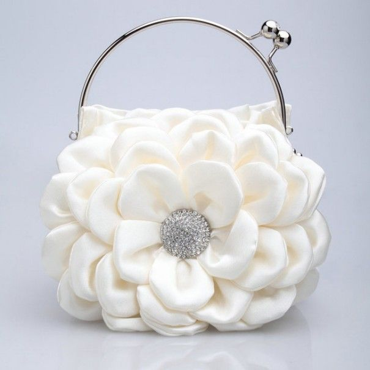
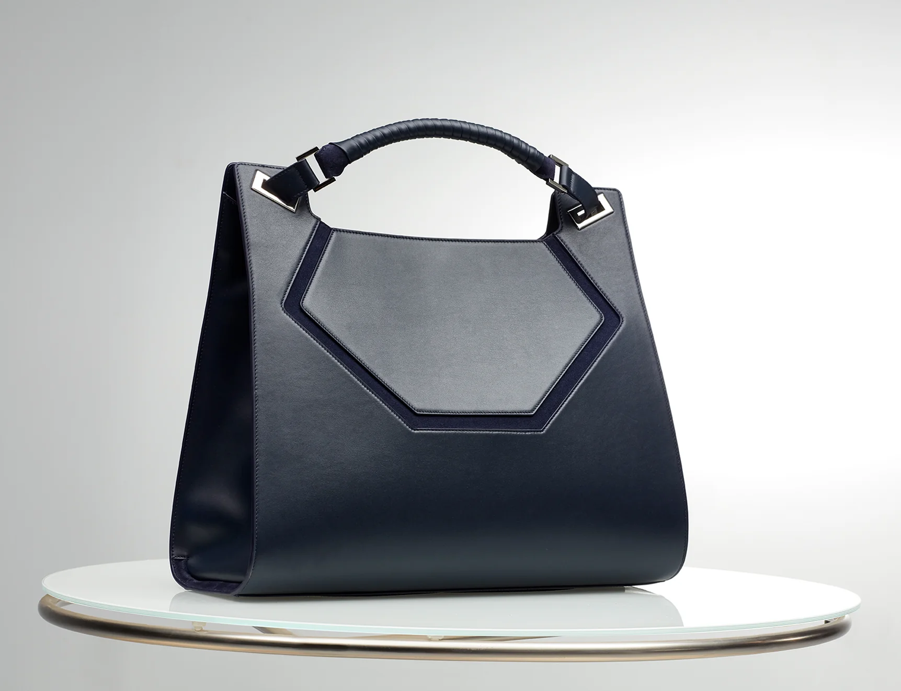

Miresevini ne Bag Boutique
Zbuloni boten e çantave premium ne Bag Boutique! Koleksioni yne permban gjithçka nga trndet botrore dhe çantat shpine me stil deri te çantat elegante dhe çantat profesionale. Çdo pjese ne koleksionin tone eshte zgjedhur per cilesine, stilin dhe funksionalitetin e saj. Nuk eshte me rendesi a jeni duke shkuar ne pune, duke eksploruar qytetin, apo duke planifikuar nje nate te veçante jashte, gjeni shoqeruesin tuaj te perkryer ne koleksionin tone te larmishme te çantave. Mendja e nje gruaje eshte po aq komplekse sa permbajtja e qantes se saj:Kur arrin deri ne cak ka gjithmone diqka qe te befason ne fund.









